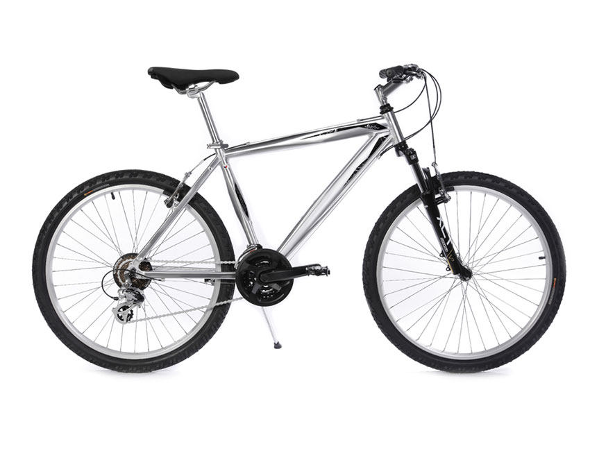

Kona
Ride into adventure with style and performance. Explore the world on two wheels with our bikes, your passport to freedom.
799.90€
Add to cartRide into adventure with style and performance. Explore the world on two wheels with our bikes, your passport to freedom.
799.90€
Add to cartChez BICYCLE, nous sommes fiers de présenter notre dernier joyau de la collection, le Vélo de Ville Premium. Conçu pour les passionnés de cyclisme urbain et les explorateurs citadins, ce vélo incarne l'alliance parfaite entre élégance, confort et performance.
"Je suis absolument ravie de mon Vélo de Ville Premium! Le design chic et la conduite fluide font de chaque trajet un plaisir. Confortable, élégant, et parfait pour mes déplacements quotidiens en ville. Je ne pourrais pas être plus satisfaite de mon achat!"
- Sara C.
"Un vélo qui ne déçoit pas! J'ai choisi le Vélo de Ville Premium pour son look moderne et son côté pratique. Les freins réactifs et la transmission fluide font de chaque virée un véritable régal. Un excellent investissement pour tous les amateurs de cyclisme urbain."
- Jean L.
"Je recommande vivement le Vélo de Ville Premium! J'ai été impressionné par la qualité de fabrication et les détails bien pensés. Confortable sur de longues distances, ce vélo s'adapte parfaitement à la vie citadine. Une valeur sûre pour tous les passionnés de vélo."
- Lyam G.
"Ce vélo a changé ma façon de me déplacer en ville. Léger, maniable et incroyablement élégant, le Vélo de Ville Premium a dépassé toutes mes attentes. Les fonctionnalités pratiques, comme le porte-bagages intégré, en font le compagnon idéal pour mes trajets quotidiens. Je le recommande à tous ceux qui recherchent un vélo de qualité supérieure."
- Anna B.